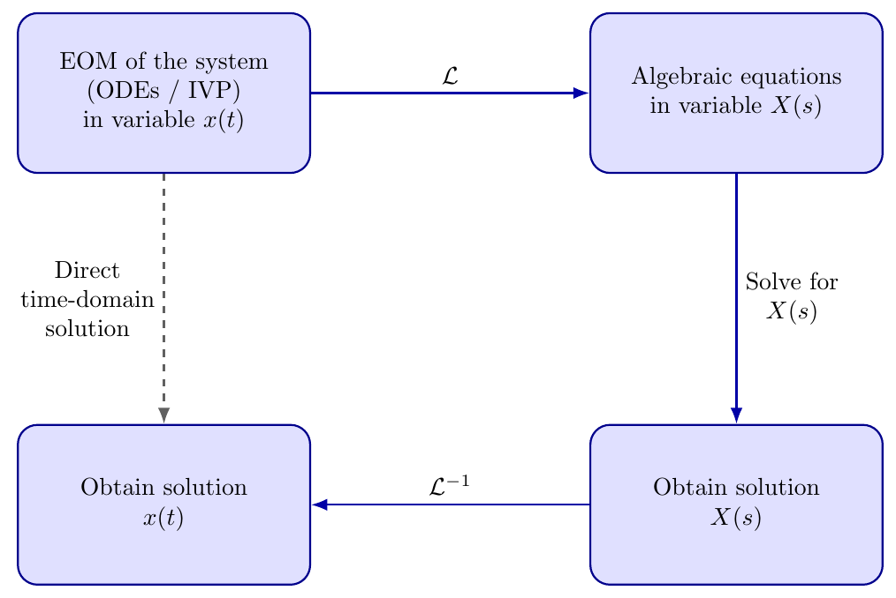
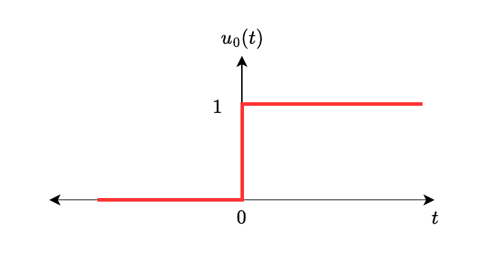
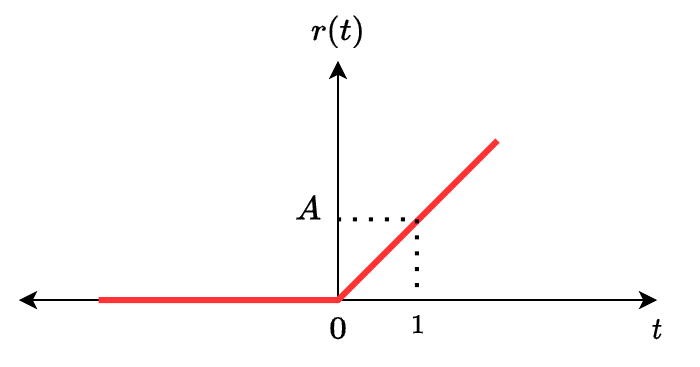
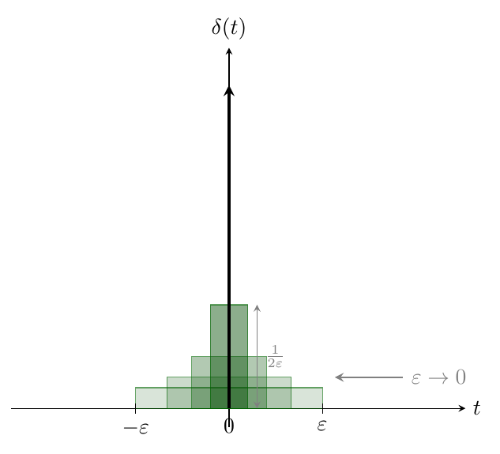
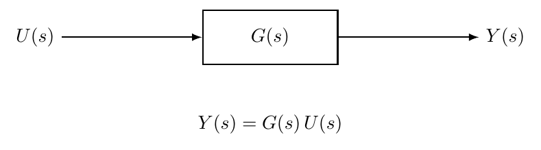
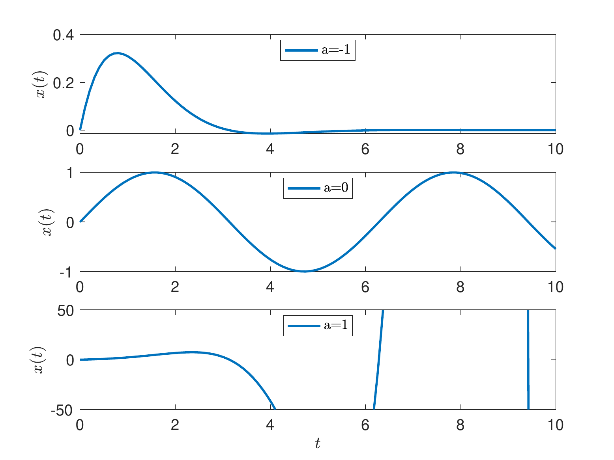
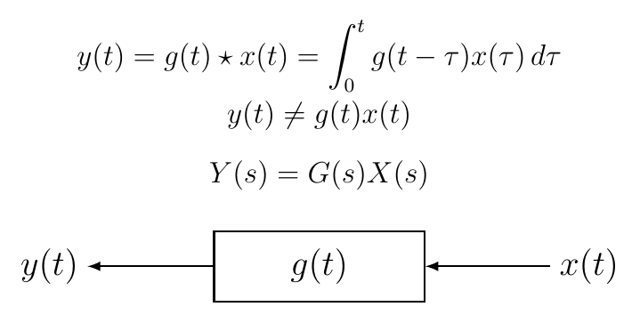
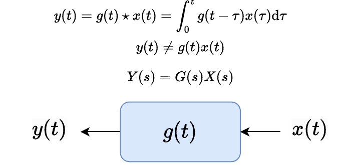

Learning Objectives After completing this chapter, you should be able to:
Compute the Laplace transform of common signals (step, ramp, impulse, exponentials, sinusoids) using the definition and standard properties.
Apply the differentiation, integration, and shifting properties to transform differential equations into algebraic equations.
Solve initial-value problems using the Laplace transform workflow: transform, solve algebraically, invert.
Derive the transfer function \(G(s) = Y(s)/U(s)\) from a linear ODE under zero initial conditions.
Perform partial fraction expansion for expressions with distinct real, complex, and repeated poles, and compute the corresponding inverse Laplace transforms.
Apply the Initial and Final Value Theorems to determine \(f(0^+)\) and \(\lim_{t\to\infty} f(t)\) directly from \(F(s)\).
This chapter introduces the Laplace transform gradually: we first learn what the transform does, then use it to solve differential equations, and only after that interpret complete system responses.
Specifically, we focus on:
The laplace: We begin with the transform pair \[F(s)=\mathcal{L}\{f(t)\}=\int_{0}^{\infty}e^{-st}f(t)\,dt \quad \leftrightsquigarrow \quad f(t)=\mathcal{L}^{-1}\{F(s)\},\] and then formalise the definition and develop the properties that are used most often in control: linearity, differentiation in time, integration, shifting, and standard transform pairs.
Solving ODEs via the Laplace transform: We convert initial-value problems in the time domain into algebraic equations in the complex variable \(s\), solve for \(F(s)\), and recover \(f(t)\) via the inverse laplace.
Transfer functions: By applying the Laplace transform to lti systems under zero initial conditions, we derive transfer functions \(G(s)\) and connect them to input–output modelling in control.
Impulse response and convolution: Once the transform machinery is in place, we return to the system viewpoint and show how impulse response and convolution fit naturally into the Laplace-domain framework.
To design a control system, we need a dynamic model expressed as differential equations. These equations, together with initial conditions such as \(x(0)\) or \(\dot{x}(0)\), form an initial value problem (IVP). The Laplace transform converts these time-domain differential equations in \(x(t)\) into algebraic equations in \(X(s)\). After solving for \(X(s)\), we use the inverse Laplace transform to obtain \(x(t)\).
This workflow is illustrated in Figure 1.1. The figure also reminds us that a direct time-domain route from the ODE to \(x(t)\) does exist; the Laplace-domain path is valuable because it often turns “solve a differential equation” into “solve an algebraic equation”, and this shift is one of the main reasons Laplace methods are so widely used in systems and control.

Even for a simple first-order system, the direct time-domain solution can be awkward to manipulate by hand. The following example illustrates the difficulty.
A motivating RC circuit
We model the circuit in Figure [fig:rc-current].
(3,6) to[sinusoidal voltage source, l=\(u\), label distance=0.02cm] (3,3); (3,6) to[american resistor, l=\(R\), label distance=0.02cm] (7,6); (7,6) to[capacitor, l=\(C\), label distance=0.02cm] (7,3); (3,3) – (7,3); at (5,3) ; (N1) at (7,6) ; at (N1) \(V_C\); (4,5.5) – node[midway, below] \(i(t)\) (6,5.5);
For the capacitor, the voltage–current relation is \[C\,\frac{dV_C(t)}{dt}=i(t),\] and by KVL around the loop \[u(t)=R\,i(t)+V_C(t) \quad\Longrightarrow\quad i(t)=\frac{u(t)-V_C(t)}{R} \quad\Longrightarrow\quad \frac{dV_C(t)}{dt}=-\frac{1}{RC}V_C(t)+\frac{1}{RC}u(t).\] Solving this first-order ODE directly yields \[\begin{equation} \label{eq:rc-solution-time} V_C(t)=V_C(0)e^{-t/(RC)} +\frac{1}{RC}\int_{0}^{t} e^{-(t-\tau)/(RC)}\,u(\tau)\,d\tau. \end{equation}\]
The integral term in [eq:rc-solution-time] shows that the present output depends on the past history of the input. For more complex inputs \(u(t)\), or higher-order systems, repeated time-domain integration quickly becomes cumbersome. The Laplace transform streamlines the process because it:
replaces \(\tfrac{d}{dt}\) with multiplication by \(s\), turning ODEs into polynomial equations in \(s\);
uses transform properties and tables to handle many inputs and initial conditions systematically;
enables block-diagram algebra for combining and simplifying interconnected systems;
recovers time-domain responses via the inverse Laplace transform when needed.
For this chapter, view \(s\) as a bookkeeping variable that turns differentiation into algebra. The main skill is learning how to move between the time domain and the \(s\)-domain.
Let \(f(t)\) be piecewise continuous for \(t\ge 0\) and of exponential order. Its (one-sided) Laplace transform is \[F(s)=\mathcal{L}\{f(t)\}\triangleq \int_{0}^{\infty} f(t)\,e^{-st}\,dt,\] where \(s=\sigma+j\omega\) is a complex variable and \(\sigma\) is chosen to ensure convergence.
Conceptually, the transform repackages the signal \(f(t)\) into a new form \(F(s)\) where differentiation becomes algebraic multiplication.
We write the forward and inverse transforms as \[F(s)=\mathcal{L}\{f(t)\}, \qquad f(t)=\mathcal{L}^{-1}\{F(s)\},\] and adopt the convention of lower-case letters for time-domain signals and upper-case for their transforms, e.g. \(f(t)\leftrightsquigarrow F(s)\), \(y(t)\leftrightsquigarrow Y(s)\). This convention helps keep track of which domain we are working in.
Linearity allows us to transform each piece of a composite input separately and combine the results.
For any constants \(a,b\) and functions \(f(t),g(t)\) whose Laplace transforms exist, \[\mathcal{L}\{a f(t)+b g(t)\}=a\,\mathcal{L}\{f(t)\}+b\,\mathcal{L}\{g(t)\}.\]
Proof. Directly from the definition: \[\begin{align*} \mathcal{L}\{af(t)+bg(t)\} &= \int_0^\infty \bigl[af(t)+bg(t)\bigr]e^{-st}\,dt \\ &= a\!\int_0^\infty f(t)\,e^{-st}\,dt + b\!\int_0^\infty g(t)\,e^{-st}\,dt = a\,F(s)+b\,G(s).\end{align*}\] ◻
The second, and arguably most important, property is that a derivative in time becomes an algebraic expression in \(s\). This is the key step that turns an initial-value ODE into an equation that can be solved by ordinary algebra.
Let \(f(t)\) be differentiable for \(t\ge 0\) with \(F(s)=\mathcal{L}\{f(t)\}\). Then \[\mathcal{L}\left\{\frac{d}{dt}f(t)\right\}=sF(s)-f(0).\]
Proof. Integration by parts with \(u=e^{-st}\) and \(dv=f'(t)\,dt\): \[\begin{align*} \int_0^\infty f'(t)\,e^{-st}\,dt &= \Bigl[f(t)\,e^{-st}\Bigr]_0^\infty + s\!\int_0^\infty f(t)\,e^{-st}\,dt \\ &= 0 - f(0) + s\,F(s) = s\,F(s) - f(0), \end{align*}\] where the boundary term at \(t\to\infty\) vanishes because \(f(t)\) is of exponential order and \(\Re(s)\) is chosen large enough. ◻
Applying the differentiation rule twice gives the second-derivative formula: \[\mathcal{L}\{\ddot{f}(t)\} = s^2 F(s) - s\,f(0) - \dot{f}(0).\] These formulas will be used repeatedly. Whenever you see \(\dot{x}(t)\), replace it by \(sX(s)-x(0)\); whenever you see \(\ddot{y}(t)\), replace it by \(s^2Y(s)-sy(0)-\dot{y}(0)\).
The companion property for integration follows immediately. If \(g(t)=\int_0^t f(\tau)\,d\tau\), then \(\dot{g}(t)=f(t)\) with \(g(0)=0\). Applying the differentiation rule to \(g(t)\) gives \(s\,G(s)=F(s)\), so \[\mathcal{L}\left\{\int_{0}^{t} f(\tau)\,d\tau\right\}=\frac{F(s)}{s}.\]
There is also a useful companion rule in the opposite direction: multiplication by \(t\) in the time domain becomes differentiation with respect to \(s\). This is especially helpful for signals such as \(t e^{-at}\), \(t\sin(\omega t)\), and higher powers of \(t\) multiplying standard signals.
Differentiation in the \(s\)-domains-domain-diff If \(\mathcal{L}\{f(t)\}=F(s)\), then \[\mathcal{L}\{t f(t)\}=-\frac{dF(s)}{ds}.\] More generally, \[\mathcal{L}\{t^n f(t)\}=(-1)^n\frac{d^nF(s)}{ds^n}, \qquad n=1,2,\ldots.\]
Proof. Differentiate the definition of \(F(s)\) with respect to \(s\): \[\frac{dF}{ds} = \frac{d}{ds}\int_0^\infty f(t)e^{-st}\,dt = \int_0^\infty f(t)(-t)e^{-st}\,dt = -\mathcal{L}\{t f(t)\}.\] Repeated differentiation gives the general formula. ◻
Using \(s\)-domain differentiations-domain-diff-example Find the Laplace transforms of \(t e^{-2t}\) and \(t\sin(3t)\).
For the first signal, start from the basic pair \[e^{-2t}\quad \longleftrightarrow \quad F(s)=\frac{1}{s+2}.\] Using Result [res:s-domain-diff], \[\mathcal{L}\{t e^{-2t}\} =-\frac{d}{ds}\left(\frac{1}{s+2}\right) =\frac{1}{(s+2)^2}.\] This is much quicker than evaluating the integral \(\int_0^\infty t e^{-2t}e^{-st}\,dt\) directly.
For the second signal, use \[\sin(3t)\quad \longleftrightarrow \quad F(s)=\frac{3}{s^2+9}.\] Therefore \[\mathcal{L}\{t\sin(3t)\} =-\frac{d}{ds}\left(\frac{3}{s^2+9}\right) =\frac{6s}{(s^2+9)^2}.\] In control problems, terms of this type appear when repeated poles or polynomially weighted transient responses occur.
The exponential shifting property lets us reuse a known transform by shifting the variable \(s\), rather than evaluating a new integral each time.
If \(\mathcal{L}\{f(t)\}=F(s)\), then \[\mathcal{L}\{e^{at}f(t)\}=F(s-a).\]
Proof. \[\mathcal{L}\{e^{at}f(t)\} = \int_0^\infty f(t)\,e^{at}\,e^{-st}\,dt = \int_0^\infty f(t)\,e^{-(s-a)t}\,dt = F(s-a).\] ◻
As a direct application, taking \(f(t)=u_0(t)\) with \(F(s)=1/s\) gives the transform of the exponential: \[\begin{equation} \label{eq:exp-transform} \mathcal{L}\{e^{at}\}=\frac{1}{s-a},\qquad \Re(s)>\Re(a). \end{equation}\] The same formula works for complex exponents: setting \(a=\alpha+j\omega\) gives \(\mathcal{L}\{e^{(\alpha+j\omega)t}\}=\frac{1}{(s-\alpha-j\omega)}\).
Trigonometric transforms. Using Euler’s identities, \[\cos\theta=\frac{e^{j\theta}+e^{-j\theta}}{2},\qquad \sin\theta=\frac{e^{j\theta}-e^{-j\theta}}{2j},\] we can derive the Laplace transforms of sine and cosine from [eq:exp-transform]. Oscillatory behaviour appears everywhere in systems and control — vibrating structures, electrical circuits, rotating machines, and underdamped closed-loop responses — so these results are fundamental.
\[\mathcal{L}\{\cos(\omega t)\}=\frac{s}{s^2+\omega^2}.\]
Proof. By Euler’s identity and linearity (Theorem [thm:linearity]), \[\mathcal{L}\{\cos(\omega t)\} = \frac{1}{2}\mathcal{L}\{e^{j\omega t}\} + \frac{1}{2}\mathcal{L}\{e^{-j\omega t}\} = \frac{1}{2}\!\left(\frac{1}{s-j\omega}+\frac{1}{s+j\omega}\right) = \frac{s}{s^2+\omega^2}.\] ◻
The sine transform follows by the same approach:
\[\mathcal{L}\{\sin(\omega t)\}=\frac{\omega}{s^2+\omega^2}.\]
Proof. Using \(\sin(\omega t)=\frac{1}{2j}\bigl(e^{j\omega t}-e^{-j\omega t}\bigr)\) and linearity, \[\mathcal{L}\{\sin(\omega t)\} = \frac{1}{2j}\!\left(\frac{1}{s-j\omega}-\frac{1}{s+j\omega}\right) = \frac{1}{2j}\cdot\frac{2j\omega}{s^2+\omega^2} = \frac{\omega}{s^2+\omega^2}.\] ◻
Often we only need to know how a response starts and where it settles, not the entire time history. The ivt and fvt provide these limiting values directly from \(F(s)\).
If \(f(t)\) has Laplace transform \(F(s)\), and all poles of \(sF(s)\) have negative real parts, then \[\lim_{t\to\infty} f(t)=\lim_{s\to 0} sF(s).\]
Proof. The differentiation property gives \(\int_0^\infty f'(t)\,e^{-st}\,dt = sF(s)-f(0)\). Taking the limit as \(s\to 0^+\) (permitted because the poles of \(sF(s)\) lie in the open left half-plane): \[\int_0^\infty f'(t)\,dt = \lim_{s\to 0}\bigl[sF(s)-f(0)\bigr].\] The left side equals \(\lim_{T\to\infty}[f(T)-f(0)]\). Cancelling \(f(0)\) from both sides gives the result. ◻
Let \(F(s)=\dfrac{5}{s(s^2+3s+2)}\). The poles of \(sF(s)=\frac{5}{s^2+3s+2}=\frac{5}{(s+1)(s+2)}\) are at \(s=-1\) and \(s=-2\), both in the left half-plane. Therefore \[\lim_{t\to\infty} f(t)=\lim_{s\to 0} sF(s)=\frac{5}{2}.\]
When the Final Value Theorem cannot be used The Final Value Theorem is only valid when all poles of \(sF(s)\) lie strictly in the left half-plane. If \(sF(s)\) has poles on the imaginary axis or in the right half-plane, the time response does not settle to a finite constant, and the theorem must not be applied.
For example, let \[F(s)=\frac{1}{s^2+1}.\] Then \(f(t)=\sin t\), which oscillates forever and has no final value. Although \[\lim_{s\to 0}sF(s)=\lim_{s\to 0}\frac{s}{s^2+1}=0,\] this number is not a valid final value because \(sF(s)=s/(s^2+1)\) has poles at \(s=\pm j\).
Listing [lst:matlab-final-value-thm] shows how to apply the Final Value Theorem symbolically in MATLAB.
Python code for applying the Final Value Theorem.
from sympy import symbols, limit
s = symbols('s')
F = 5 / (s * (s**2 + 3*s + 2))
fv = limit(s * F, s, 0)
print("Final value:", fv)syms s
F = 5 / (s * (s^2 + 3*s + 2));
fv = limit(s * F, s, 0);If \(f(t)\) has Laplace transform \(F(s)\) and \(F(s)\) is strictly proper (degree of the numerator less than the degree of the denominator), then \[\lim_{t\to 0^+} f(t)=\lim_{s\to \infty} sF(s).\]
Proof. Again from the differentiation property, \(\int_0^\infty f'(t)\,e^{-st}\,dt = sF(s)-f(0)\). Now let \(s\to\infty\): for \(\Re(s)\) large, the factor \(e^{-st}\) forces the integral to zero. Hence \[0 = \lim_{s\to\infty}\bigl[sF(s)-f(0)\bigr] \quad\Longrightarrow\quad f(0^+)=\lim_{s\to\infty}sF(s).\] ◻
This section collects Laplace transforms of signals that recur throughout control engineering. The aim is to recognise these signal families and understand why they appear so often.
These signals represent progressively more demanding reference inputs and will be central to the tracking and steady-state error analysis in later chapters.
Step signal. A unit step is defined by \[u_0(t)= \begin{cases} 1, & t\ge 0,\\ 0, & \text{otherwise.} \end{cases}\] We use \(u_0(t)\) for the unit step to avoid confusion with \(u(t)\), which denotes the control input throughout this book. Some texts use \(\mathbf{1}(t)\) or \(\mathcal{H}(t)\) (Heaviside function) instead.

Its Laplace transform follows directly from the definition: \[\mathcal{L}\{u_0(t)\}=\int_{0}^{\infty} e^{-st}dt=\left[-\frac{e^{-st}}{s}\right]_0^\infty=\frac{1}{s},\qquad \Re(s)>0.\]
The unit-step signal can be generated in MATLAB as shown in Listing [lst:matlab-step].
Python code for the unit-step signal \(r(t)=A\,u_0(t)\).
import numpy as np
import matplotlib.pyplot as plt
t = np.arange(0, 10.01, 0.01)
A = 1
r = A * (t >= 0).astype(float)
plt.plot(t, r)
plt.xlabel('t'); plt.ylabel('r(t)')
plt.title('Unit Step Signal')t = 0:0.01:10;
A = 1;
r = A*(t >= 0);
plot(t, r);Ramp signal. Let \(r(t)=At\) for \(t\ge 0\). Then \[\mathcal{L}\{r(t)\}=\int_{0}^{\infty} At\, e^{-st}dt=\frac{A}{s^2},\qquad \Re(s)>0.\]

The corresponding MATLAB code is given in Listing [lst:matlab-ramp].
Python code for the ramp signal.
import numpy as np
import matplotlib.pyplot as plt
t = np.arange(0, 10.01, 0.01)
A = 1
r = A * t
plt.plot(t, r)
plt.xlabel('t'); plt.ylabel('r(t)')
plt.title('Ramp Signal')t = 0:0.01:10;
A = 1;
r = A*t;
plot(t,r);Parabolic signal. Let \(r(t)=\tfrac{A}{2}t^2\) for \(t\ge 0\). Then \[\mathcal{L}\{r(t)\}=\frac{A}{s^3},\qquad \Re(s)>0.\]

Listing [lst:matlab-parabolic] generates the parabolic signal in MATLAB.
Python code for the parabolic signal.
import numpy as np
import matplotlib.pyplot as plt
t = np.arange(0, 10.01, 0.01)
A = 1
r = (A / 2) * t**2
plt.plot(t, r)
plt.xlabel('t'); plt.ylabel('r(t)')
plt.title('Parabolic Signal')t = 0:0.01:10;
A = 1;
r = (A/2).*t.^2;
plot(t,r);These three signals reveal a useful pattern: each extra power of \(t\) in the time domain produces one extra factor of \(1/s\) in the Laplace domain. The general formula is \[\mathcal{L}\{t^n\} = \frac{n!}{s^{n+1}}, \qquad n = 0,1,2,\ldots\] which gives \(1/s\) for \(n=0\) (step), \(1/s^2\) for \(n=1\) (ramp), and \(2/s^3\) for \(n=2\) (parabolic with \(A=2\)). This pattern will become important later when we interpret system type and tracking performance.
The Dirac delta \(\delta(t)\) represents an idealised very short input with finite total effect. Although no real actuator produces a perfect impulse, this idealisation is useful because it reveals the intrinsic dynamics of a system.
We can build intuition by starting with unit-area rectangular pulses: \[r_\varepsilon(t)= \begin{cases} \dfrac{1}{2\varepsilon}, & -\varepsilon \le t < \varepsilon,\\ 0, & \text{otherwise}, \end{cases} \qquad \int_{-\infty}^{\infty} r_\varepsilon(t)\,dt=1,\] and letting \(\varepsilon\to 0^+\), which yields \(\delta(t)\) in the sense of distributions.

For any continuous function \(f(t)\), \[\int_{-\infty}^{\infty} \delta(t-t_0)\, f(t)\,dt=f(t_0).\]
Informal justification. Replace \(\delta(t-t_0)\) by the rectangular pulse \(r_\varepsilon(t-t_0)\). For small \(\varepsilon\), the function \(f(t)\) is approximately constant over the narrow interval \([t_0-\varepsilon,\,t_0+\varepsilon]\), so \[\int_{-\infty}^{\infty} r_\varepsilon(t-t_0)\,f(t)\,dt \;\approx\; f(t_0)\!\int_{-\infty}^{\infty} r_\varepsilon(t-t_0)\,dt = f(t_0)\cdot 1.\] Taking \(\varepsilon\to 0^+\) makes this exact. ◻
This property explains why the delta function is so powerful: it “picks out” the value of a signal at one instant. That is precisely why the impulse will later become the natural input for defining impulse response.
Using Theorem [thm:sifting], the Laplace transform of the impulse is \[\mathcal{L}\{\delta(t)\}=\int_{0}^{\infty}\delta(t)e^{-st}dt=e^{-s\cdot 0}=1.\] For a shifted impulse at \(t=a>0\), the sifting property gives \(\mathcal{L}\{\delta(t-a)\}=e^{-sa}\). This is a special case of a more general result about time delay:
If \(\mathcal{L}\{f(t)\} = F(s)\) and \(a > 0\), then \[\mathcal{L}\{f(t-a)\,u_0(t-a)\} = e^{-as}\,F(s).\] In words: delaying a signal by \(a\) seconds multiplies its transform by \(e^{-as}\).
Proof. Substitute \(\tau = t-a\) (so \(t=\tau+a\), \(dt=d\tau\)): \[\int_0^\infty f(t-a)\,u_0(t-a)\,e^{-st}\,dt = \int_0^\infty f(\tau)\,e^{-s(\tau+a)}\,d\tau = e^{-as}\!\int_0^\infty f(\tau)\,e^{-s\tau}\,d\tau = e^{-as}F(s).\] ◻
This result is important whenever sensing, actuation, communication, or transport delays are present in a control system. Listing [lst:matlab-dirac] illustrates how MATLAB’s Symbolic Math Toolbox handles the Dirac delta and its Laplace transform.
Python code to represent \(\delta(t)\), \(\delta(t-2)\), and their Laplace transforms.
from sympy import symbols, DiracDelta, laplace_transform, pprint
t, s = symbols('t s', positive=True)
d = DiracDelta(t)
pprint(d)
L = laplace_transform(d, t, s, noconds=True)
Lshift = laplace_transform(DiracDelta(t - 2), t, s, noconds=True)
print("L{delta(t)} =", L)
print("L{delta(t-2)} =", Lshift)syms t
d = dirac(t);
pretty(d)
L = laplace(d);
Lshift = laplace(dirac(t - 2));Exponentially-modulated sinusoids arise in underdamped responses, vibration, AC circuits, and modal analysis. The frequency-shift property (Result [res:exp-shift]) gives: \[\mathcal{L}\{e^{-at}\sin(\omega t)\} = \frac{\omega}{(s+a)^2+\omega^2}, \qquad \mathcal{L}\{e^{-at}\cos(\omega t)\} = \frac{s+a}{(s+a)^2+\omega^2}.\]
Consider \[x(t)=e^{at}\sin(\omega t).\] Using the frequency-shift property (Result [res:exp-shift]) applied to Result [res:sin-ex], we obtain \[X(s)=\frac{\omega}{(s-a)^2+\omega^2}.\]
For a decaying (stable) signal, \(a<0\). Example responses are shown in Figure 1.6.

Listing [lst:matlab-exponentials] reproduces these three cases in MATLAB.
Python code to display exponentially-modulated sinusoids.
import numpy as np
import matplotlib.pyplot as plt
t = np.arange(0, 10.01, 0.01)
omega = 1
a_values = [-1, 0, 1]
for i, a in enumerate(a_values):
x = np.exp(a * t) * np.sin(omega * t)
plt.subplot(3, 1, i + 1)
plt.plot(t, x, linewidth=1.5)
plt.xlabel('t'); plt.ylabel('x(t)')
plt.title(f'a = {a}')
plt.tight_layout()t = 0:0.01:10;
omega = 1;
a_values = [-1, 0, 1];
figure;
for i = 1:length(a_values)
a = a_values(i);
x = exp(a*t) .* sin(omega*t);
subplot(3,1,i);
plot(t, x, 'LineWidth', 1.5);
xlabel('t'); ylabel('x(t)');
endListing [lst:matlab-time-delay] demonstrates how to construct a time-delayed signal in MATLAB using the unit-step factor to enforce causality.
Python code to generate a time-delayed function \(f(t-\tau)\) from \(f(t)\).
import numpy as np
import matplotlib.pyplot as plt
t = np.arange(0, 10.01, 0.01)
original_function = np.exp(-t / 2) * np.sin(3 * t)
tau = 2
delayed_function = np.exp(-(t - tau) / 2) * np.sin(3 * (t - tau)) * (t >= tau)
plt.plot(t, original_function, label='f(t)')
plt.plot(t, delayed_function, label=f'f(t-{tau})')
plt.xlabel('t'); plt.legend()
plt.title('Original and Time-Delayed Signals')t = 0:0.01:10;
original_function = exp(-t/2) .* sin(3*t);
tau = 2;
delayed_function = exp(-(t-tau)/2) .* sin(3*(t-tau)) .* (t>=tau);When a time delay is present, the delayed signal must be interpreted carefully: the waveform is shifted to the right, and a unit-step factor is used to keep the signal causal. In control, that detail matters because a delayed response should not appear before the delay time has actually elapsed.
The method follows a short recipe:
write the differential equation and the initial conditions clearly;
take the Laplace transform of each term, using Result [res:diff-int] for derivatives;
solve the resulting algebraic equation for the unknown transform \(X(s)\) or \(Y(s)\);
rewrite the answer in a form that matches known transform pairs, then apply \(\mathcal{L}^{-1}\).
A first complete Laplace-solution workflow Consider the initial-value problem \[\dot{x}(t)+2x(t)=u_0(t),\qquad x(0)=1.\] Taking the Laplace transform of both sides gives \[\mathcal{L}\{\dot{x}(t)\}+2\mathcal{L}\{x(t)\}=\mathcal{L}\{u_0(t)\}.\] Using Result [res:diff-int] and \(\mathcal{L}\{u_0(t)\}=1/s\), \[\bigl(sX(s)-x(0)\bigr)+2X(s)=\frac{1}{s}.\] Substituting \(x(0)=1\) gives \[(s+2)X(s)-1=\frac{1}{s},\] so \[(s+2)X(s)=1+\frac{1}{s}=\frac{s+1}{s} \quad\Longrightarrow\quad X(s)=\frac{s+1}{s(s+2)}.\] Now rewrite \(X(s)\) using simple partial fractions: \[\frac{s+1}{s(s+2)}=\frac{A}{s}+\frac{B}{s+2}.\] Matching coefficients gives \(A=B=\tfrac12\), hence \[X(s)=\frac{1/2}{s}+\frac{1/2}{s+2}.\] Applying the inverse Laplace transform, \[x(t)=\frac{1}{2}u_0(t)+\frac{1}{2}e^{-2t}u_0(t).\] For \(t\ge 0\), we usually write this simply as \[x(t)=\frac{1}{2}+\frac{1}{2}e^{-2t}.\] This example is worth remembering because it shows the core pattern of the method: after the transform is taken, the differential equation disappears and we solve an ordinary algebraic equation instead.
The important point is that the answer above depends on both the input and the initial condition. In control, however, we often want a model that captures the system dynamics themselves, independently of a particular experiment. That leads naturally to the idea of a transfer function.
A transfer function describes the input–output dynamics of an LTI system itself, independent of any particular experiment. Transfer functions are defined under zero initial conditions so that the model reflects the system dynamics, not a particular starting state.
The transfer function of a linear time-invariant system is defined as \[G(s)=\frac{Y(s)}{U(s)},\] where \(Y(s)\) is the Laplace transform of the output and \(U(s)\) is the Laplace transform of the input, assuming zero initial conditions.
Once \(G(s)\) is known, different inputs can be analysed by simple multiplication in the Laplace domain rather than by re-deriving the differential equation each time.

Consider the dynamic model \[\begin{equation} \label{eq:ode-example} \ddot y(t)+5\dot y(t)+4y(t)=u(t),\qquad y(0)=\dot y(0)=0. \end{equation}\] where the input is \(u(t)=2e^{-2t}u_0(t)\).
Taking the Laplace transform of both sides and using Result [res:diff-int] gives \[(s^2+5s+4)Y(s)=U(s).\] Hence the transfer function (Definition [def:transfer-function]) is \[G(s)=\frac{Y(s)}{U(s)}=\frac{1}{s^2+5s+4}.\] Since \(\mathcal{L}\{e^{-2t}\}=\frac{1}{s+2}\) and the input is \(u(t)=2e^{-2t}u_0(t)\), we have \[U(s)=\frac{2}{s+2}.\] Therefore \[\begin{equation} \label{eq:Y-example} Y(s)=\frac{2}{(s^2+5s+4)(s+2)}. \end{equation}\]
Listing [lst:matlab-ilaplace] verifies the time-domain result using MATLAB’s ilaplace command.
Python code to compute the inverse Laplace transform \(y(t)\) from \(Y(s)\).
from sympy import symbols, inverse_laplace_transform
s, t = symbols('s t')
Y = 2 / ((s**2 + 5*s + 4) * (s + 2))
y_t = inverse_laplace_transform(Y, s, t)
print("y(t) =", y_t)syms s t
Y = 2 / ((s^2 + 5*s + 4) * (s + 2));
y_t = ilaplace(Y, s, t);pfe (PFE) maps a rational \(Y(s)\) to standard transform pairs. The key question is: what kind of poles does the expression have? Distinct real poles, complex poles, and repeated poles each produce a standard type of time response.
Suppose we can decompose [eq:Y-example] as \[\begin{equation} \label{eq:pfe-form-simple} Y(s)=\frac{A}{s+4}+\frac{B}{s+1}+\frac{C}{s+2}. \end{equation}\] For simple poles, the coefficients can be found using the cover-up method (also called the residue method): cover the factor associated with the coefficient you want, then substitute the corresponding pole value. For example: \[A=\left.\frac{2}{(s+1)(s+2)}\right|_{s=-4}=\frac{1}{3},\qquad B=\left.\frac{2}{(s+4)(s+2)}\right|_{s=-1}=\frac{2}{3},\] \[C=\left.\frac{2}{(s+4)(s+1)}\right|_{s=-2}=-1.\] The cover-up method works cleanly whenever all poles are simple. Each term in the expansion corresponds directly to one exponential in time, so the structure of the response is immediately visible: \[Y(s)=\frac{1/3}{s+4}+\frac{2/3}{s+1}-\frac{1}{s+2}, \qquad y(t)=\left(\frac{1}{3}e^{-4t}+\frac{2}{3}e^{-t}-e^{-2t}\right)u_0(t).\]
These residues and poles can also be obtained numerically using the residue command, as shown in Listing [lst:matlab-pfe-residue].
Python code for computing the partial fraction expansion using residue.
import numpy as np
from scipy.signal import residue
num = [2]
den = np.convolve([1, 5, 4], [1, 2]) # (s^2+5s+4)(s+2)
r, p, k = residue(num, den)
print("Residues:", r)
print("Poles: ", p)
print("Direct: ", k)num = [2];
den = conv([1 5 4], [1 2]); % (s^2+5s+4)(s+2)
[r, p, k] = residue(num, den);When a quadratic factor \(s^2 + bs + c\) has complex roots, its inverse Laplace transform involves \(e^{-\sigma t}\cos(\omega t)\) and \(e^{-\sigma t}\sin(\omega t)\). The strategy is:
Keep the quadratic factor intact (do not split into complex conjugate fractions).
Complete the square in the denominator to get the form \((s+\sigma)^2 + \omega^2\).
Rewrite the numerator as \(\alpha(s+\sigma) + \beta\omega\) so that the fraction splits directly into \(\alpha\) times the cosine pair plus \(\beta\) times the sine pair: \[\frac{\alpha(s+\sigma)+\beta\omega}{(s+\sigma)^2+\omega^2} \;\longleftrightarrow\; e^{-\sigma t}\bigl[\alpha\cos(\omega t)+\beta\sin(\omega t)\bigr].\]
Consider the ODE \[\ddot{y} + \dot{y} + y = u(t),\] with unit-step input \(u(t) = u_0(t)\). Taking Laplace transforms (zero ICs): \[Y(s) = \frac{1}{s(s^2+s+1)}.\]
Step 1: Partial fraction expansion. \[\frac{1}{s(s^2+s+1)} = \frac{A}{s} + \frac{Bs + C}{s^2+s+1}.\] The \(A\) term (real pole at \(s=0\)): use the cover-up method, \[A = \left.\frac{1}{s^2+s+1}\right|_{s=0} = 1.\] Multiply both sides by \(s(s^2+s+1)\): \[1 = (s^2+s+1) + (Bs+C)\,s.\] Expanding: \(1 = s^2 + s + 1 + Bs^2 + Cs = (1+B)s^2 + (1+C)s + 1\).
Matching coefficients: \[\begin{align*} s^2: \quad 1 + B &= 0 \quad \Rightarrow \quad B = -1, \\ s^1: \quad 1 + C &= 0 \quad \Rightarrow \quad C = -1. \end{align*}\] So \[Y(s) = \frac{1}{s} - \frac{s+1}{s^2+s+1}.\]
Step 2: Complete the square in the denominator. \[s^2 + s + 1 = \left(s + \tfrac{1}{2}\right)^2 + \tfrac{3}{4}.\] Identify: \(\sigma = \frac{1}{2}\) and \(\omega^2 = \frac{3}{4}\), so \(\omega = \frac{\sqrt{3}}{2}\).
Step 3: Rewrite the numerator to match \((s+\sigma)\) and \(\omega\).
We need the numerator \(s + 1\) expressed in terms of \((s + \frac{1}{2})\): \[s + 1 = \underbrace{\left(s + \tfrac{1}{2}\right)}_{\text{matches cosine pair}} + \underbrace{\tfrac{1}{2}}_{\text{leftover}}.\] Now write the leftover \(\frac{1}{2}\) as a multiple of \(\omega = \frac{\sqrt{3}}{2}\): \[\frac{1}{2} = \frac{1}{\sqrt{3}} \cdot \frac{\sqrt{3}}{2} = \frac{1}{\sqrt{3}} \cdot \omega.\] So \[\frac{s+1}{(s+\frac{1}{2})^2 + \frac{3}{4}} = \frac{(s+\frac{1}{2})}{(s+\frac{1}{2})^2 + \omega^2} + \frac{1}{\sqrt{3}} \cdot \frac{\omega}{(s+\frac{1}{2})^2 + \omega^2}.\]
Step 4: Read off the inverse Laplace transform.
Using the standard pairs: \[\frac{s+\sigma}{(s+\sigma)^2+\omega^2} \;\longleftrightarrow\; e^{-\sigma t}\cos\omega t, \qquad \frac{\omega}{(s+\sigma)^2+\omega^2} \;\longleftrightarrow\; e^{-\sigma t}\sin\omega t,\] we get \[y(t) = 1 - e^{-t/2}\cos\!\left(\frac{\sqrt{3}}{2}\,t\right) - \frac{1}{\sqrt{3}}\,e^{-t/2}\sin\!\left(\frac{\sqrt{3}}{2}\,t\right), \qquad t \geq 0.\]
Step 5: Compact single-sinusoid form.
The two oscillatory terms can be combined into a single sinusoid using the identity \[A\cos\theta + B\sin\theta = C\sin(\theta+\phi), \qquad C=\sqrt{A^2+B^2},\quad \phi=\arctan\!\frac{A}{B}.\] Here, with \(\omega_d = \frac{\sqrt{3}}{2}\) and \(\theta = \omega_d\,t\), the oscillatory part is \[-\!\left[\cos(\omega_d t) + \frac{1}{\sqrt{3}}\sin(\omega_d t)\right] = -\!\left[A\cos(\omega_d t) + B\sin(\omega_d t)\right],\] with \(A=1\) and \(B=1/\sqrt{3}\). Therefore \[C = \sqrt{1+\tfrac{1}{3}} = \frac{2}{\sqrt{3}}, \qquad \phi = \arctan\!\frac{A}{B} = \arctan\sqrt{3} = \frac{\pi}{3}.\] So the step response can be written compactly as \[\boxed{y(t) = 1 - \frac{2}{\sqrt{3}}\,e^{-t/2}\sin\!\left(\frac{\sqrt{3}}{2}\,t + \frac{\pi}{3}\right), \qquad t\ge 0.}\] This single-sinusoid form makes it easy to read off the oscillation amplitude envelope \(\frac{2}{\sqrt{3}}\,e^{-t/2}\) and the phase shift \(\pi/3\) directly.
Repeated poles lead to one more standard pattern: powers of \(t\) multiplying exponentials. The extra factor of \(t\) is the time-domain signature of pole repetition.
Find the inverse Laplace transform of \[Y(s)=\frac{s-1}{(s+1)^2}.\] For a double pole at \(s=-1\), the partial fraction form is \[\frac{s-1}{(s+1)^2}=\frac{A}{s+1}+\frac{B}{(s+1)^2}.\] Multiplying both sides by \((s+1)^2\): \[s-1 = A(s+1)+B.\] Setting \(s=-1\) gives \(B=-2\). Comparing the coefficient of \(s\) gives \(A=1\). Therefore \[\frac{s-1}{(s+1)^2}=\frac{1}{s+1}-\frac{2}{(s+1)^2},\] and using \(\mathcal{L}^{-1}\{1/(s+a)^2\}=t\,e^{-at}\), \[y(t)=e^{-t}-2t\,e^{-t},\qquad t\ge 0.\]
In general, a pole of multiplicity \(m\) at \(s=-a\) contributes terms of the form \(t^k e^{-at}\) for \(k=0,1,\ldots,m-1\). The corresponding Laplace pair is \[\mathcal{L}\{t^k e^{-at}\} = \frac{k!}{(s+a)^{k+1}}.\]
For LTI systems, two ideas connect the transfer function to time-domain behaviour: the impulse response and convolution.
The impulse response \(g(t)\) is the output produced by the input \(\delta(t)\). It captures the system’s intrinsic dynamics in a single time-domain function.
If the transfer function of the system is \(G(s)\), then an impulse input has transform \(\mathcal{L}\{\delta(t)\}=1\), so \[Y(s)=G(s)\cdot 1 = G(s).\] Therefore the impulse response is simply \[g(t)=\mathcal{L}^{-1}\{G(s)\}.\] The impulse response is the time-domain counterpart of the transfer function. In a mechanical system it shows how the structure vibrates after a sharp tap; in a circuit it shows the reaction to a short burst of excitation. Once \(g(t)\) is known, the output for any input can be computed without re-solving the differential equation.
Once the impulse response \(g(t)\) is known, the output corresponding to a general input \(x(t)\) can be written as the convolution of \(x(t)\) with \(g(t)\): \[\begin{equation} \label{eq:convolution-def} y(t)=(x \star g)(t)\triangleq \int_{0}^{t} g(t-\tau)\,x(\tau)\,d\tau. \end{equation}\] Equation [eq:convolution-def] says that the output at time \(t\) is built from past input values, weighted by how the system responds over time. The symbol \(\star\) denotes convolution; it is not ordinary multiplication. Each small piece of the input excites the system, and the total output is the accumulation of all those shifted small responses.

The great advantage of the Laplace transform is that it turns the integral in [eq:convolution-def] into ordinary multiplication.
If \(\mathcal{L}\{x(t)\}=X(s)\) and \(\mathcal{L}\{g(t)\}=G(s)\), then \[\mathcal{L}\{x(t)\star g(t)\}=X(s)\,G(s).\]
Proof. Starting from the definition of the Laplace transform applied to the convolution integral: \[\begin{align*} \mathcal{L}\{x\star g\} &= \int_0^\infty \!\left[\int_0^t g(t-\tau)\,x(\tau)\,d\tau\right] e^{-st}\,dt. \end{align*}\] The double integral is over the region \(0\le\tau\le t<\infty\). Switching the order of integration to \(0\le\tau<\infty\), \(\tau\le t<\infty\): \[\begin{align*} &= \int_0^\infty x(\tau)\!\left[\int_\tau^\infty g(t-\tau)\,e^{-st}\,dt\right]d\tau. \end{align*}\] In the inner integral, substitute \(\sigma=t-\tau\): \[\begin{align*} &= \int_0^\infty x(\tau)\,e^{-s\tau}\!\left[\int_0^\infty g(\sigma)\,e^{-s\sigma}\,d\sigma\right]d\tau = G(s)\!\int_0^\infty x(\tau)\,e^{-s\tau}\,d\tau = G(s)\,X(s).\end{align*}\] ◻
Therefore, for an LTI system with transfer function \(G(s)\) and input \(X(s)\), we can write \(Y(s)=G(s)X(s)\), which in the time domain means exactly that \(y(t)=x(t)\star g(t)\). This theorem explains why transfer-function methods are so effective: in the time domain, interconnected system behaviour may require integration, but in the Laplace domain, the same relationship is captured by straightforward multiplication.
The Laplace transform of a periodic signal can always be expressed in terms of the transform of a single period.
Let \(f(t)\) be periodic with period \(T>0\) for \(t\ge 0\), i.e. \(f(t+T)=f(t)\). Define \(f_1(t)\) as one period of the signal: \[f_1(t) = \begin{cases} f(t), & 0\le t < T,\\ 0, & \text{otherwise.} \end{cases}\] If \(F_1(s)=\mathcal{L}\{f_1(t)\}\), then \[\begin{equation} \label{eq:periodic-laplace} F(s) = \frac{F_1(s)}{1-e^{-sT}}. \end{equation}\]
Proof. Write \(f(t)\) as a sum of shifted copies of \(f_1(t)\): \[f(t) = \sum_{k=0}^{\infty} f_1(t-kT).\] By the time-shift property (Result [res:time-shift]), \(\mathcal{L}\{f_1(t-kT)\}=e^{-ksT}F_1(s)\), so \[F(s) = \sum_{k=0}^{\infty} e^{-ksT} F_1(s) = F_1(s)\sum_{k=0}^{\infty} \bigl(e^{-sT}\bigr)^k = \frac{F_1(s)}{1-e^{-sT}},\] where the geometric series converges for \(\Re(s)>0\). ◻
The denominator \(1-e^{-sT}\) is common to all periodic signals with the same period; only the single-period transform \(F_1(s)\) changes from one waveform to another. This makes it easy to analyse different periodic excitations once the one-period integral has been computed.
Find the Laplace transform of a square wave with amplitude \(A\) and period \(T\) defined by \[f(t) = \begin{cases} +A, & 0 \le t < T/2,\\ -A, & T/2 \le t < T, \end{cases} \qquad f(t+T)=f(t).\] Step 1: Compute the one-period transform. \[F_1(s) = \int_0^{T/2}\! A\,e^{-st}\,dt + \int_{T/2}^{T}\! (-A)\,e^{-st}\,dt = \frac{A}{s}\!\bigl(1-e^{-sT/2}\bigr) - \frac{A}{s}\!\bigl(e^{-sT/2}-e^{-sT}\bigr) = \frac{A}{s}\!\bigl(1-e^{-sT/2}\bigr)^{\!2}.\] Step 2: Apply [eq:periodic-laplace]. \[F(s) = \frac{F_1(s)}{1-e^{-sT}} = \frac{A}{s}\cdot\frac{\bigl(1-e^{-sT/2}\bigr)^2}{\bigl(1-e^{-sT/2}\bigr)\bigl(1+e^{-sT/2}\bigr)} = \frac{A}{s}\cdot\frac{1-e^{-sT/2}}{1+e^{-sT/2}}.\] Multiplying numerator and denominator by \(e^{sT/4}\) gives \[\boxed{F(s) = \frac{A}{s}\,\tanh\!\left(\frac{sT}{4}\right).}\]
Why this matters for PID tuning In Chapter [chap:pid], the relay (on–off) method for PID tuning drives the plant with a square-wave-like signal and measures the resulting oscillation period and amplitude. Understanding how periodic inputs are represented in the Laplace domain helps explain why the method works: the dominant harmonic of the relay output determines the critical gain and frequency.
Listing [lst:matlab-periodic-square] verifies the square-wave result by comparing the analytical \(\tanh\) form with a numerical partial-sum approximation.
Verifying the periodic square-wave Laplace transform in Python.
import numpy as np
A = 1; T = 2
s = np.arange(0.1, 5.01, 0.1)
# Analytical result: (A/s)*tanh(s*T/4)
F_exact = (A / s) * np.tanh(s * T / 4)
# Numerical check: sum N shifted copies of F1(s)
N = 200
F_approx = np.zeros(s.shape)
for k in range(N):
F_approx += (A / s) * (1 - 2*np.exp(-s*T/2) + np.exp(-s*T)) * np.exp(-k*s*T)
print("Max error with %d terms: %.2e" % (N, np.max(np.abs(F_exact - F_approx))))A = 1; T = 2;
s = 0.1:0.1:5;
% Analytical result: (A/s)*tanh(s*T/4)
F_exact = (A./s) .* tanh(s*T/4);
% Numerical check: sum N shifted copies of F1(s)
N = 200;
F_approx = zeros(size(s));
for k = 0:N-1
F_approx = F_approx + (A./s) .* ...
(1 - 2*exp(-s*T/2) + exp(-s*T)) .* exp(-k*s*T);
end
fprintf('Max error with %d terms: %.2e\n', N, max(abs(F_exact - F_approx)));The following MATLAB commands are used throughout this chapter and the next few chapters:
residue(num, den) — compute residues and poles for partial fraction expansion. The syntax is [r, p, k] = residue(num, den), where r contains the residues, p the poles, and k the direct term (if any).
partfrac(F) — symbolic partial fraction expansion (requires the Symbolic Math Toolbox).
laplace(f) — Laplace transform of a symbolic expression \(f(t)\).
ilaplace(F) — inverse Laplace transform of \(F(s)\).
limit(s*F, s, 0) — apply the Final Value Theorem (Theorem [thm:final-value]).
Listing [lst:matlab-partfrac-ilaplace] combines partfrac and ilaplace in a short workflow.
Using apart and inverse_laplace_transform to compute an inverse Laplace transform.
from sympy import symbols, apart, inverse_laplace_transform
s, t = symbols('s t')
F = (s + 1) / ((s + 2) * (s + 3)**3)
Factorized = apart(F, s)
print("Partial fractions:", Factorized)
f_t = inverse_laplace_transform(F, s, t)
print("f(t) =", f_t)syms s t
F = (s+1)/((s+2)*(s+3)^3);
Factorized = partfrac(F);
f_t = ilaplace(Factorized, s, t);
disp(f_t)Common mistakes with Laplace methods
Forgetting the initial-condition terms in derivative transforms, for example writing \(\mathcal{L}\{\dot{x}\}=sX(s)\) when \(x(0)\ne 0\).
Applying the Final Value Theorem before checking the poles of \(sF(s)\).
Forgetting the unit-step factor in delayed signals: a causal delay should be written as \(f(t-a)u_0(t-a)\), not just \(f(t-a)\).
Treating time-domain convolution as ordinary multiplication. In general, \(y(t)=g(t)\star x(t)\), not \(y(t)=g(t)x(t)\).
Mixing the input notation \(u(t)\) with the unit-step notation \(u_0(t)\). In this book, \(u(t)\) usually means a control input, while \(u_0(t)\) denotes the unit step.
Chapter Summary
The Laplace transform converts time-domain differential equations into algebraic equations in \(s\), which is why it is so useful in control engineering.
The most important beginner workflow is: transform the ODE, substitute the initial conditions, solve algebraically for \(X(s)\) or \(Y(s)\), and then invert the transform.
Key properties include linearity, differentiation in time \(\bigl(\mathcal{L}\{\dot{f}\}=sF(s)-f(0)\bigr)\), differentiation in the \(s\)-domain \(\bigl(\mathcal{L}\{t f(t)\}=-dF/ds\bigr)\), integration, and shifting.
Common signals such as the step, ramp, impulse, exponentials, and sinusoids have standard Laplace pairs that are used repeatedly in analysis and design.
The Laplace transform of a periodic signal with period \(T\) is \(F(s) = F_1(s)/(1-e^{-sT})\), where \(F_1(s)\) is the transform of one period.
The transfer function \(G(s)=Y(s)/U(s)\) captures the input–output dynamics of an LTI system under zero initial conditions.
Partial fraction expansion is a practical technique for computing inverse Laplace transforms of rational functions and interpreting time responses.
The impulse response \(g(t)\) is the time-domain fingerprint of an LTI system, and convolution describes how a general input produces an output through that impulse response.
The Initial and Final Value Theorems provide quick access to \(f(0^+)\) and \(f(\infty)\) directly from \(F(s)\), without always performing the full inverse transform.
MATLAB commands such as laplace(), ilaplace(), partfrac(), and residue() are useful for verifying hand calculations and exploring more complex expressions.
| Signal type | Time domain \(f(t)\), \(t\ge 0\) | Laplace domain \(F(s)\) |
|---|---|---|
| Unit impulse | \(\delta(t)\) | \(1\) |
| Unit step | \(u_0(t)\) | \(\dfrac{1}{s}\) |
| Unit ramp | \(t\) | \(\dfrac{1}{s^2}\) |
| Powers of \(t\) | \(t^n\) | \(\dfrac{n!}{s^{n+1}}\) |
| Exponential | \(e^{-at}\) | \(\dfrac{1}{s+a}\) |
| \(t\times\) exponential | \(t\,e^{-at}\) | \(\dfrac{1}{(s+a)^2}\) |
| Sine | \(\sin(\omega t)\) | \(\dfrac{\omega}{s^2+\omega^2}\) |
| Cosine | \(\cos(\omega t)\) | \(\dfrac{s}{s^2+\omega^2}\) |
| Damped sine | \(e^{-at}\sin(\omega t)\) | \(\dfrac{\omega}{(s+a)^2+\omega^2}\) |
| Damped cosine | \(e^{-at}\cos(\omega t)\) | \(\dfrac{s+a}{(s+a)^2+\omega^2}\) |
| Property | Result |
|---|---|
| Linearity | \(\mathcal{L}\{\alpha f + \beta g\} = \alpha F(s) + \beta G(s)\) |
| Differentiation | \(\mathcal{L}\{\dot{f}\} = sF(s) - f(0)\) |
| Second derivative | \(\mathcal{L}\{\ddot{f}\} = s^2F(s) - sf(0) - \dot{f}(0)\) |
| Integration | \(\mathcal{L}\!\left\{\displaystyle\int_0^t f(\tau)\,d\tau\right\} = \dfrac{F(s)}{s}\) |
| \(s\)-domain differentiation | \(\mathcal{L}\{t^n f(t)\}=(-1)^n\dfrac{d^nF(s)}{ds^n}\) |
| Frequency shift | \(\mathcal{L}\{e^{at}f(t)\} = F(s-a)\) |
| Time shift | \(\mathcal{L}\{f(t-a)\,u_0(t-a)\} = e^{-as}F(s)\) |
| Periodic signal | \(f(t+T)=f(t) \;\Rightarrow\; F(s)=\dfrac{F_1(s)}{1-e^{-sT}}\) |
| Final value | \(\displaystyle\lim_{t\to\infty} f(t) = \lim_{s\to 0} sF(s)\) |
| Initial value | \(\displaystyle\lim_{t\to 0^+} f(t) = \lim_{s\to\infty} sF(s)\) |
(Laplace Transform — Basic Signals) Compute the Laplace transform of each signal from the definition or using the transform table and properties. State the region of convergence where applicable.
\(f(t) = 3\,u_0(t) - 2\,e^{-4t}\,u_0(t)\)
\(f(t) = t\,e^{-2t}\,u_0(t)\)
\(f(t) = e^{-t}\sin(3t)\,u_0(t)\)
\(f(t) = 5\,u_0(t-2)\) (delayed unit step of magnitude 5)
(Inverse Laplace Transform — Distinct Real Poles) Find \(f(t)\) for each \(F(s)\) using partial fraction expansion:
\(F(s) = \dfrac{5}{s(s+3)}\)
\(F(s) = \dfrac{2s+7}{(s+1)(s+4)}\)
\(F(s) = \dfrac{10}{(s+1)(s+2)(s+5)}\)
(Inverse Laplace Transform — Complex Poles) Find \(f(t)\):
\(F(s) = \dfrac{4}{s^2 + 4s + 13}\)
\(F(s) = \dfrac{s+1}{s^2 + 2s + 5}\)
Hint: Complete the square in the denominator and use the \(e^{-at}\sin(\omega t)\) and \(e^{-at}\cos(\omega t)\) transform pairs.
(Inverse Laplace Transform — Repeated Poles) Find \(f(t)\):
\(F(s) = \dfrac{3}{(s+2)^2}\)
\(F(s) = \dfrac{s+5}{s(s+1)^2}\)
(Transfer Function from ODE) A system is described by the differential equation: \[\ddot{y} + 5\dot{y} + 6y = 2\dot{u} + 3u\]
Assuming zero initial conditions, derive the transfer function \(G(s) = Y(s)/U(s)\).
Find the poles and zeros of \(G(s)\).
Is the system stable? Justify your answer.
Use the Final Value Theorem to find the steady-state output for a unit step input.
(Initial and Final Value Theorems) For each \(F(s)\), use the IVT to find \(f(0^+)\) and the FVT to find \(\lim_{t\to\infty} f(t)\) (if the limit exists). State any conditions required.
\(F(s) = \dfrac{3(s+2)}{s(s+1)(s+4)}\)
\(F(s) = \dfrac{10}{s(s^2 + 2s + 10)}\)
\(F(s) = \dfrac{5}{s^2 + 4}\) (Does the FVT apply? Why or why not?)
(Step Response by Hand) Consider the transfer function: \[G(s) = \frac{6}{(s+1)(s+3)}\]
Find the unit step response \(Y(s) = G(s) \cdot \dfrac{1}{s}\).
Perform partial fraction expansion on \(Y(s)\).
Compute \(y(t)\) using the inverse Laplace transform.
What is the steady-state value? Verify using the Final Value Theorem.
Verify your result in MATLAB using step(tf([6],[1 4 3])).
(MATLAB Verification) Use MATLAB to verify your answers to Problems 2 and 4:
Use residue(num, den) to compute the partial fraction expansion for Problem 2(c). Compare with your hand calculation.
Use the Symbolic Math Toolbox: syms s; F = ...; ilaplace(F) to find the inverse transform for Problem 4(b). Does it match?
Create a transfer function object for Problem 7: G = tf([6],[1 4 3]). Use step(G) and stepinfo(G) to find the settling time and steady-state value.
(Pole–Zero Map and Behaviour) For each transfer function below, find the poles and zeros, plot the pole–zero map (by hand or using pzmap() in MATLAB), and describe the expected time-domain behaviour (decaying, oscillatory, growing, etc.):
\(G_1(s) = \dfrac{1}{s+5}\)
\(G_2(s) = \dfrac{s+2}{s^2 + 2s + 10}\)
\(G_3(s) = \dfrac{4}{s^2 - 1}\)
(Periodic Signals) A sawtooth wave has amplitude \(A\), period \(T\), and is defined over one period by \(f_1(t) = \frac{A}{T}\,t\) for \(0\le t<T\).
Show that the one-period Laplace transform is \[F_1(s) = \frac{A}{Ts^2}\bigl(1 - e^{-sT}(1+sT)\bigr).\]
Use the periodic-signal formula [eq:periodic-laplace] to write \(F(s)\).
A first-order system \(G(s) = 1/(s+1)\) is driven by the sawtooth with \(A=1\) and \(T=2\). Use MATLAB to plot the output \(y(t)\) for \(0 \le t \le 10\) using lsim with a sawtooth input vector. Comment on whether \(y(t)\) also becomes periodic after an initial transient.
(Challenge) A system has the transfer function: \[G(s) = \frac{s + 3}{(s+1)(s^2+4s+8)}\]
Find all poles and zeros. Identify the damping ratio and natural frequency of the complex poles.
Perform full partial fraction expansion of \(Y(s) = G(s)/s\).
Find \(y(t)\) and sketch the expected step response shape.
Verify every step using MATLAB: residue, ilaplace, step, and pzmap.